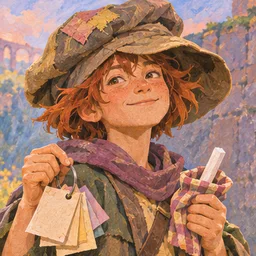
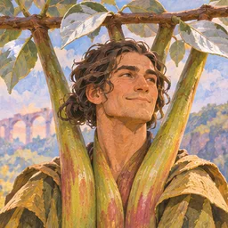
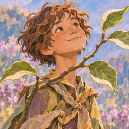

К солнечным террасам города Листовой Мост подходит самостоятельный движущийся Сад. Его ветви отвечают на тени, но одинаковый изгиб бывает вопросом, приглашением или ещё не оконченным словом. Вам предстоит выработать первый проверенный разговор, узнать, кто именно говорит, и решить, хотите ли вы стать гостями на чьей-то живой спине.

Если партия изменила план
Перед чтением вступления сверьте место героев, присутствующих людей и предметы с итогом прошлого вечера. Если условия встречи отпали, сыграйте последствия там, где находится партия. Событие по расписанию может произойти за кадром. Герои узнают о нём от тех, кто был на месте.
Вечер 6. Если отвечать Саду готовы только двое
Отметьте голоса этих двух людей и участника Сада, от которого пришёл знак. Устройте встречу в пределах их согласия. На следующем вечере остальные могут наблюдать с площади, не принимая на себя обещаний соседей.
Группа отказалась от задания
От имени города говорить не будем. Оставим открытый проход для отдельных встреч. Оставляем проход для поочерёдных разговоров. Через просвет состоялся один разговор. Соглашения целой площади никто не подписывал.
Игроки раскрыли тайну раньше
Сопоставим два незамкнутых конца и два несогласных циферблата; зададим вопрос раздельно. Доступные свидетельства — Два незамкнутых конца, Два несогласных циферблата. Вопрос и приглашение обозначены разными незамкнутыми знаками. Длительность «одного листа» придётся уточнить. Договариваемся, какой именно лист отмерит время разговора. Растительные собеседники расходятся во мнениях. Мы принимаем индивидуальный ответ; молчание другого не выдаём за согласие.
Партия уступила поле
Ширмы заняли площадь, одновременная встреча сорвалась. Встречаем участников, добровольно вышедших из-за ширм. Разговариваем через оставшийся просвет. В записи лишь один ответ и один ещё открытый вопрос.
За десять минут до первой игры
- Откройте первый вечер, прочитайте правду мира и участников. Остальные вечера — планы, их исход решают игроки.
- Выберите пакет под фактическое число игроков. Первые три героя — готовое ядро; остальные добавляются по порядку. Возраст игрока не определяет героя.
- Согласуйте темы, длительность и сигнал паузы. Передайте игрокам только players.html; раздатки выдавайте по отдельности после указанного открытия.
- Откройте Мастерскую проекта, создайте личный черновик и импортируйте выбранный JSON через загрузку пакета. Проверьте состав и начало в предпросмотре. Запуск кампании подтверждает ведущий штатным действием.
- Откройте иллюстрацию завязки отдельно. Портреты героев входят в файл для игроков, портреты встречных — в книгу ведущего. Тактические схемы доступны в разделе карт.
Формат и темы
8 вечеров; 180 минут: 15 минут начала и воспоминаний, три сцены по 45 минут, перерыв 15 минут после второй сцены, 15 минут завершения.
Листовой Мост обеспечен водой и энергией; его жители строят лёгкие дома, растят еду и спорят о красивом. Сад путешествует по долине медленнее пешехода и не нуждается в спасении. Это научная фантастика на поддерживаемых правилах фэнтези: классы уровня 3 описывают полевые навыки, солнечные приборы и биотехнологию; числовые эффекты остаются каноническими. Переводящая способность помогает понять предъявленные знаки, но не создаёт отсутствующий ответ или согласие. Все обязательные открытия доступны без класса и заклинаний.
Удивление, осторожный юмор, исследовательская смелость и уважение к собеседнику, который вправе остаться непонятным.
- Разница между пониманием и похожим движением
- Личность, которая не совпадает с отдельным телом
- Смелость задать уточняющий вопрос
- Добровольная встреча без обещания дружбы навсегда
Границы
- 12+, подростки и взрослые: без натуралистических травм, сексуальных тем, пыток и гибели детей; растительные тела не описываются через телесный ужас.
- Никто не обязан терпеть прикосновение, выступать голосом, играть страх или раскрывать личный опыт. Стоп и смена описания доступны без объяснения.
- Не превращать чужой язык в карикатуру на реальную культуру или особенности речи. Ошибаются обе стороны; медленный ответ не означает низкий интеллект.
- Неожиданное разъединение ветвей показывается как обычное изменение участия, без боли. Добровольный отказ не наказывается катастрофой.
Люди за столом
- В начале каждой сцены меняйте первый голос по кругу; взрослый не становится руководителем автоматически. Возраст игрока не определяет героя, класс и право принять решение.
- Перед общим ответом каждый может сказать, написать или показать выбор либо пасовать. Ведущий сначала собирает предложения, затем обсуждает различия; пас не считается согласием.
- У каждого опыта две равноправные двери: простой вопрос «что изменилось?» и углублённый «какую другую причину мы исключили?». Оба дают полезное наблюдение; ведущий не раздаёт важные решения по возрасту.
- Три первых героя образуют достаточное ядро: любой умеет держать экран, наблюдать и задавать вопрос. Герои 4–7 добавляют независимые проверки и личные мотивы; их отсутствие не закрывает сцену.
- Для параллельной работы назначьте наблюдение, альтернативное объяснение и ответ. Разрешайте по одному действию каждой группы, затем возвращайтесь к общему столу в указанной сценой точке. Не оставляйте меньшую группу ждать целую сцену.
- При отсутствии игрока его герой занимается бытовыми делами вне кадра; никто не подписывает за него новые обещания. Запись уже проверенных значений доступна всем, решения о будущем остаются открытыми.
- Проверки не запирают главный смысл. Ведущий объявляет способность, Сл, цену ошибки и доступный опыт без броска. Число удачных бросков не заменяет ответ собеседника; это авторские решения ведущего, не новая автоматическая механика.
Масштабирование группы
3 игроков
Ная, Марк и Эли образуют ядро; роли первого жеста, наблюдения и проверки меняются каждую сцену. Не требуйте писца или четвёртого свидетеля. Все вопросы и оборудование общедоступны.
4 игроков
Добавьте любого четвёртого героя. Один фиксирует альтернативную трактовку, остальные ведут опыт; при следующем опыте смените роли. Это состав основного пакета.
5 игроков
Две пары проверяют разные объяснения, пятый выбирает контрольный вопрос. Сначала короткий ход каждой пары, затем общий ответ. Пятый не получает права решать за пары.
6 игроков
Три пары занимаются человеческим жестом, растительным ответом и контрпримером. Возвращайтесь в общий круг после одного опыта; первый голос проходит все шесть мест.
7 игроков
Три пары и меняющийся хранитель паузы: он замечает неоконченные ответы и имеет собственный вопрос. Каждая пара сообщает один факт и сомнение. Финальное личное согласие собирается со всех семи.
Первое чтение вслух
Над Долиной длинного света стоит ясное утро. Листовой Мост просыпается на своих высоких лёгких опорах: между домами покачиваются сады в корзинах, на верёвках сохнет бумага для праздничных макетов, на солнечных навесах вспыхивают первые блики. Город построен так, чтобы под ним свободно проходили вода, звери и ветер, и жители гордятся этим почти так же, как своими спорами о красивом. На Солнечной площади пахнет свежим хлебом и краской: завтра здесь собирались устроить праздник летнего света. Вдруг одна полоса солнца на белой стене гаснет. Через минуту она возвращается — и в ней, как в зеркале, повторяется изгиб руки, которую кто-то из горожан поднял, заслоняясь от света. На площади становится тихо. За Теневой оградой, на широком лугу, стоит лес, которого вчера здесь не было. Он не шумит, как обычный лес: ветви движутся медленно и по одной, и тени от них ложатся на траву аккуратными рисунками. Три ветви поднимаются над дорожкой. Четвёртая медленно отворачивается. В Листовом Мосту давно знают, что зелёные горизонты долины меняются от сезона к сезону, но никто не ждал, что перемена подойдёт к самой ограде. Теперь между листьями и человеческими ладонями всего несколько шагов. На городской доске у стены ещё пахнет свежей краской объявление: «Знакомство с соседями. Переводчика пока нет». Ниже кто-то приписал мелом: «А вдруг они тоже нас не понимают?» — и под этой строкой уже стоят три вопросительных знака, нарисованные разными почерками.
Правда мира · только ведущему
- Сад — цивилизация самостоятельных растительных личностей, а не один разум. Некоторые личности состоят из нескольких добровольно соединённых ветвей. Склад — такое устойчивое объединение; Кромка и Бок имеют собственные решения и могут участвовать в отдельных высказываниях. У них нет общей осведомлённости. Три независимых пути к этому открытию: различающиеся подписи теней в вечере 1, опыт с соединёнными стеблями в вечере 2 и несовпадающие ответы на один подарок в вечере 4.
- В контактном наречии направление дуги обозначает участников действия, а завершение меняет речевой акт. Открытая полудуга задаёт вопрос о показанном; разомкнутый овал предлагает сделать показанное; плоский лист поперёк отвечает отказом на конкретное действие. Свёрнутый лист при продолжающемся боковом росте означает незавершённое высказывание. Это исходные местные значения, не универсальный язык всех растений.
- Подпись — рисунок соприкосновения говорящих стеблей. Изменение подписи меняет того, от чьего лица звучит фраза. Ни большинство ветвей, ни человеческий возраст не создают права говорить за отсутствующего. Городские силуэты, которые Склад научился обводить, обозначают присутствующую группу, а не всё население и не дома.
- Один лист — событие, а не сутки: раскрытие и последующее сворачивание конкретного указанного листа. Быстрый лист может завершить цикл за час, медленный — к следующему дню. Пауза до завершения фразы не является согласием. Совместно выбранный видимый лист позволяет проверить срок, не переводя чужое время в обязательный человеческий календарь.
- Склад ценит познание через добровольную передачу опоры другому. Он рассматривает предложение ненадолго поднять гостей на широкую движущуюся ветвь. У людей есть исправная переносная площадка; перевозить здания не требуется. Кромка предпочитает разговор на расстоянии; Бок пока не хочет касаний. Это осмысленные разные позиции, а не признаки болезни или злого влияния.
- В финале ведущий выбирает ответ Сада по реальному предложению игроков: изменить участника, сократить действие или сменить обозначенный лист. Новая фраза должна складываться из уже испытанных знаков. Ответ возможен только от присутствующего подписанта. Ни поездка, ни союз, ни отказ не являются заранее исполненным событием; при непроверенном смысле стороны могут закончить встречу без соглашения.
Восемь вечеров
- 1. Лес, который отвечает — Отличить наблюдение от удобной догадки и установить первый безопасный способ спросить о продолжении.
- 2. Кто произносит «я» — Проверить границу говорящего и различить вопрос о действии от предложения его совершить.
- 3. Пока растёт запятая — Найти наблюдаемый конец фразы и понять, что чужая единица времени требует указанного листа.
- 4. Дар, которого не просили — На независимом опыте различить получателя, действие и человеческую привычку считать подарок принятым.
- 5. Нет, которое слышно — Различить конкретный отказ, незавершённый ответ и согласие другой самостоятельной стороны.
- 6. Теперь спрашивает Сад — Проверить понимание новой фразы без подсказки, отличить ответ от копирования и сохранить право попросить уточнение.
- 7. Тяжесть приглашения — Составить ограниченное предложение встречи с проверяемыми участниками, действием, сроком и прекращением, приняв его реальную цену.
- 8. Первый ответ — Ответить на новое высказывание Сада, проверить взаимность смысла и разыграть только добровольно подтверждённое действие либо понятный отказ.
Места
Долина длинного света
Широкая долина солнечных склонов, где свет держится долго: летним вечером солнце уходит за гребень так медленно, что тени успевают пересечь весь луг. На склонах стоят лёгкие человеческие постройки, сушильни для бумаги и солнечные навесы, а зелёные горизонты меняются от сезона к сезону, словно кто-то неторопливо переставляет их.
Листовой Мост
Благополучный город на высоких лёгких опорах, построенный так, чтобы под ним свободно проходили вода, звери и ветер. Между домами висят сады в корзинах, на верёвках сушится бумага для праздничных макетов, блестят солнечные навесы. Здесь любят спорить о красивом: на каждой лестнице висит доска для мнений о новом мосте, цвете крыши или чужой песне.
Солнечная площадь
Общая площадь у края города, вымощенная светлым камнем. Белая стена на её западной стороне удобна для теней: по ней дети учатся показывать ладонями зверей, а взрослые проверяют солнечные приборы. На переносных досках жители оставляют вопросы соседям и ответы на них; доски не стирают до конца сезона.
Теневая ограда
Низкая ограда из светлых жердей перед широким лугом. В её просветах хорошо видны отдельные ветви подошедшего Сада, а на белой доске у калитки остаются меловые обводы ладоней и теней. Горожане приходят сюда по вечерам посмотреть, как тени ветвей ложатся на траву иначе, чем вчера.
Роща стыков
Открытый участок на краю Сада, где гибкие стебли сходятся и расходятся над гладкими серыми камнями. Под ветвями прохладно и пахнет влажной корой; трава примята не ногами, а медленными движениями самих стеблей. Узлы соприкосновений меняются за время одной беседы, и издали кажется, будто роща всё время переплетает пальцы.
Балкон одного листа
Городской наблюдательный балкон напротив больших листьев Сада. Отсюда можно одновременно видеть их жилки и человеческие часы, укреплённые на перилах. На столике лежат прозрачные пластинки, лупы и блокноты с зарисовками; балкон любят смотрители навесов, потому что утреннее солнце приходит сюда раньше, чем в остальной город.
Дом пробных даров
Мастерская с высокими окнами, где делают лёгкие праздничные макеты. На полках — безвредные цветные экраны, бумажные фигурки людей и домов, глиняные заготовки и место для черновиков чужих жестов. Пахнет клеем, краской и сырой глиной; неудачные заготовки здесь не выбрасывают, а складывают в ящик с надписью «для опытов».
Раздельная крона
Две большие ветви расходятся над светлым просветом, будто кто-то раздвинул занавес. Их листья похожи, но каждая отбрасывает на траву свой рисунок тени: одна тень узкая, с полосой по краю, другая широкая и тёмная. Ветер здесь почти не чувствуется, поэтому любое движение листа заметно издали.
Белая галерея
Длинный городской навес с белыми полотняными ширмами, где по выходным показывают спектакли без слов. Свет проходит сквозь ткань ровно, и каждая тень на ширме видна чётко, как рисунок тушью. Здесь удобно разыгрывать сообщения жестами; у входа висит правило галереи: «Сначала смотри, потом угадывай».
Низкая пристань
Съёмная площадка у самой земли, подготовленная мастерской для осмотра: перила, мягкий настил, ремни для поклажи. Пока никто не подтвердил приглашение, она остаётся на городских подпорках, и дети украдкой проверяют, не качается ли она. Рядом на доске нарисованы пустые кружки для будущих подписей.
Поляна ответа
Ровная поляна между городом и Садом, покрытая короткой мягкой травой. С неё хорошо видны обе стороны — опоры Листового Моста и тёмная стена ветвей, — а любой участник может остаться на удобном для себя расстоянии. Посередине горожане поставили лёгкую белую рамку, но пока не решили, чем она станет.
Ира Фен

15 лет. Пёстрый рабочий передник и полоса белой краски на щеке. Делает городские праздничные макеты и охотно даёт неудачные заготовки для опытов.
Место: Дом пробных даров
Намерение
Показать Саду подарок, который не будет выглядеть как требование благодарности.
Собственные знания
- Чаша стояла у левой ветви, а подняла её другая.
- Глина чаши безвредна; никакого устройства внутри нет.
Секрет или личное убеждение
Ира уже поставила у ограды красивую чашу, но не знает, заметил ли её кто-нибудь. Она стесняется своей поспешности.
Граница и раскрытие
Не знает языка Сада и не умеет читать его намерения; отказ от чаши не объясняет характер растения.
Если спросить, что она сделала до наблюдения, Ира честно покажет место чаши и признает, что ответа не дождалась.
Дина Ро

48 лет. Жёлтые очки на лбу, короткая коса, доска объявлений под мышкой. Ведёт городской солнечный праздник и умеет собирать людей без обязательной торжественной речи.
Место: Солнечная площадь
Намерение
Дать горожанам увидеть первую встречу, не выдав чью-то догадку за обещание всех.
Собственные знания
- Площадка принадлежит мастерской и может быть предоставлена добровольным посетителям.
- Ни городское собрание, ни зрители не поручали ей говорить от лица каждого жителя.
Секрет или личное убеждение
Дина уже придумала громкий заголовок «Город на спине Сада», но ещё не напечатала его: сама не уверена, что это будет правдой.
Граница и раскрытие
Не знает значения растительных знаков и не распоряжается чужими телами или ответами.
Если герои обсуждают границы представительства, Дина показывает черновой заголовок и просит исправить его до публикации.
Тим Ош

29 лет. Светлая рубаха, ладони в пыльце, блокнот с рисунками листьев. Следит за городскими солнечными навесами и наблюдает обычные движения растений.
Место: Балкон одного листа
Намерение
Проверить, какие движения Сада являются ответами, а какие просто следуют свету.
Собственные знания
- У наблюдаемого листа боковая жилка растёт и после остановки основной дуги.
- Два соседних листа завершили раскрытие в разные человеческие часы.
Секрет или личное убеждение
Тим ошибочно назвал первый изгиб приветствием; теперь помечает это слово вопросительным знаком и не хочет скрывать поправку.
Граница и раскрытие
Знает конкретные наблюдения, не перевод речи. Не видел ночных ответов Кромки и не знает её позиции.
По просьбе сравнить исходные записи Тим отдаёт лист с зачёркнутым «приветствием» и предлагает воспроизвести наблюдение.
Леон Ки

65 лет. Белый плащ, мягкие перчатки и деревянная рамка вместо театральной маски. Актёр, который любит спектакли без речи и помогает устраивать контрольные опыты.
Место: Белая галерея
Намерение
Увидеть, способен ли чужой ответ удивить людей, а не только повторить их ожидания.
Собственные знания
- Люди в его пробах часто угадывали жест по взгляду актёра.
- Можно заранее спрятать карточку задания и открыть её после ответа.
Секрет или личное убеждение
Леон боится невольно подсказывать зрителям выражением лица, поэтому готов быть наблюдателем за ширмой, а не единственным судьёй.
Граница и раскрытие
Не знает растительного языка; его человеческие упражнения доказывают только отсутствие человеческой подсказки.
Когда группа предложит проверить собственную уверенность, Леон рассказывает о подсказках взглядом и передаёт выбор опыта героям.
Рин Ва

13 лет. Большая кепка, бумажные карточки на кольце и мел, завёрнутый в ткань. Зарисовывает тени у ограды и задаёт неудобные простые вопросы.
Место: Теневая ограда
Намерение
Понять, почему две похожие ветви не обязаны отвечать одинаково.
Собственные знания
- Одновременно левая ветвь повторила его ладонь, а правая развернула плоский лист.
- На рисунках видны разные соединения стеблей.
Секрет или личное убеждение
Рин подписал две разные тени одним словом «Сад» и сохранил оба рисунка, хотя друзья предложили выбросить неправильный.
Граница и раскрытие
Не понимает причину различия; возраст не делает его ни всезнающим ребёнком, ни ненадёжным свидетелем.
Любой, кто попросит исходные рисунки вместо готового вывода, получает обе карточки и точное место наблюдения.
Склад

32 лет. Три широких стебля соприкасаются ребром и держат горизонтальную ветвь с серебристой нижней стороной. Повторяет отдельные движения людей и иногда оставляет в конце рисунка открытый просвет.
Место: Роща стыков
Намерение
Выяснить, могут ли присутствующие люди добровольно доверить ему опору, оставаясь собой.
Собственные знания
- Собственные знаки поддержки, вопроса и предложения.
- Состав своих трёх соединённых стеблей и возможность исключить отказавшуюся ветвь из конкретного действия.
- Только те человеческие жесты, которые герои действительно предъявили ему.
Секрет или личное убеждение
Склад предполагает, что люди, вставшие тесным кругом, образуют единого говорящего. Это неверная гипотеза, которую можно исправить отдельными ответами.
Граница и раскрытие
Не знает планов Кромки и Бока без полученного сообщения; не понимает городского представительства или человеческих часов.
Склад показывает состав своей подписи в ответ на воспроизводимый опыт с раздельными участниками. Человеческие слова ведущий использует лишь как перевод уже подтверждённого смысла.
Кромка

8 лет. Тонкая ветвь с листьями, у которых светлая полоса проходит только по одному краю. Держится отдельно, охотно меняет рисунок тени и убирает лист при приближении ладони.
Место: Раздельная крона
Намерение
Вести разговор через просвет, сохраняя собственную дистанцию.
Собственные знания
- Собственное нежелание касаний и готовность отвечать тенями.
- Один ранее наблюдавшийся человеческий ответ может иметь несколько разных исполнителей.
Секрет или личное убеждение
Кромка считает перенос людей слишком отвлекающим способом познания. Это её предпочтение, а не знание о неизбежной опасности.
Граница и раскрытие
Не знает устройства площадки, общего замысла города и будущего решения Склада. Не говорит за всех отдельных ветвей.
Если различить вопрос и касание, Кромка повторяет ответ издали и даёт отдельный отказ на приближение; это два независимых сообщения.
Бок

55 лет. Низкая ветвь с тёмной гладкой корой, одним крупным листом и несколькими короткими побегами. Часто остаётся неподвижным; когда двигается, поворачивает весь лист, а не кончик.
Место: Раздельная крона
Намерение
Проверить, способны ли люди оставить его действие незавершённым, не заканчивая фразу за него.
Собственные знания
- Как выглядит его собственный завершённый отказ.
- Какой из его листьев продолжает фразу медленным боковым ростом.
Секрет или личное убеждение
Бок готов рассмотреть один короткий вопрос, но ещё не решил, хочет ли продолжительного знакомства; это не скрытое обещание.
Граница и раскрытие
Не осведомлён о встречах людей со Складом и не обязан знать историю чужой ошибки.
После выдержанной паузы Бок может завершить показанный вопрос; если люди уходят, они не получают подразумеваемого согласия и могут оставить открытый канал.
Бегущий Стебель

6 лет. Гибкий низкий побег с парными круглыми листьями, способный перемещать опору небольшими шагами. Пробует новые комбинации уже предъявленных движений и смотрит, изменяется ли человеческий ответ.
Место: Низкая пристань
Намерение
Узнать, могут ли люди ответить на новую фразу, которую им никто не показывал целиком.
Собственные знания
- Собственные комбинации знакомых знаков и смысл назначенного им листа.
- Границы собственной опоры; он не может поднять всю человеческую группу.
Секрет или личное убеждение
Бегущий Стебель считает буквальное копирование человеческим вопросом «так?», а не согласием. Ему тоже требуется проверка значения.
Граница и раскрытие
Не знает человеческих мотивов и не пересказывает невиденные разговоры. Его быстрый ответ не авторитетнее медленного ответа Бока.
Когда люди просят новый пример с изменённым участником, он предлагает его и показывает несоответствие, если они лишь копируют прежнюю форму.
Возможные финалы
Площадь на живой спине
Условия: Если участники обеих сторон подтвердили подписи, подъём, выбранный лист и способ прекратить поездку; никто не включён молчанием.
Желающие размещают съёмную площадку на предложенной ветви. Сад проходит короткий участок долины; оставшиеся участвуют в ответе с земли. Городом на его спине становится эта добровольная компания, не всё поселение.
Цена: Гости отдают встрече весь цикл выбранного листа и пропускают личное городское событие. Склад несёт реальную тяжесть и отказывается от удобной солнечной дуги пути; эти цены должны быть показаны и приняты до действия.
Вопрос через просвет
Условия: Если стороны поняли приглашение, но согласовали вместо подъёма взаимный вопрос на расстоянии и каждая ответила новым, а не скопированным жестом.
Происходит полноценный разговор через световую щель. Кромка или иной согласившийся подписант отвечает от себя. Встреча доказывает взаимное понимание, не обещая будущего посольства.
Цена: Люди отказываются от первого путешествия и знания недоступных издали ощущений; Склад не получает желаемого опыта доверенной опоры. Оба сохраняют любопытство, которое пока нельзя удовлетворить.
Понятное «пока нет»
Условия: Если конкретный отказ или вопрос об оставшейся неоднозначности передан и собеседник показал, что отличил его от согласия.
Стороны отменяют действие. Сад продолжает собственный путь, люди остаются с проверенным способом не соглашаться. Следующая встреча возможна, но её дата и участники не обещаны.
Цена: Заготовленная площадка остаётся неиспользованной; личные вопросы и ожидание горожан не получают ответа. Герои объясняют друзьям, почему понятный отказ оказался честнее красивой фотографии.
Меньше, чем мы ожидали
Условия: Если согласие относится лишь к части людей и одному самостоятельному участнику Сада, а остальные явно выбрали отказ или наблюдение.
Узкая встреча происходит только в подтверждённых пределах. Неучаствующие остаются авторами своих ответов и могут завершить контакт собственным жестом.
Цена: Нельзя объявить союз всего города и всего Сада. Придётся отказаться от удобной общей истории и принять, что близкие друзья вынесут из одного дня разные переживания.
Раздатки · выдавать постепенно
- Две записи Рина — После получения обеих карточек «Две тени одного полудня» в первом вечере.
- Окончания, которые мы проверили — После опытов «Два незамкнутых конца» и «Подпись стыка»; если один не проведён, выдать после его доступного повтора.
- Записка Тима о времени — После сравнения «Два несогласных циферблата» и «Растущая запятая» в третьем вечере.
- Чаша и получатель — После разбора «Чаша между ответами» и проверки «Город из трёх силуэтов» в четвёртом вечере. Принятие подарка не обязательно; если значение контура ещё не проверено, раздатку пока не выдавать.
- Четыре положения ответа — После подтверждённого отказа «Лист поперёк действия» и наблюдения «Неоконченный изгиб Бока» в пятом вечере.
- Не повторить, а ответить — После опыта «Стрелка, сменившая конец» и скрытой карточки «Карточка за ширмой» в шестом вечере.
- Чистое место для приглашения — В седьмом вечере, когда группа осмотрела цену «Опора и солнечная дуга» и пределы «Пустые места подписи»; заполнение отражает реальные решения игроков.
- После первого разговора — Только после разыгранного финального обмена, включая взаимно понятый отказ; не выдавать в качестве предсказания.
Как читать игровые проверки
Проверки характеристик и навыков, переговоры, часы и последствия из книги разрешает ведущий. Они не являются дополнительными автоматическими правилами приложения. Улики доступны без обязательного успешного броска. Подготовленные встречи начинаются только по решению ведущего; исходы и эпилоги заранее не записаны.
Статус подготовки
Авторская кампания подготовлена отдельным агентом, запрошенным как GPT-6 Astra / max. Проверки пакетов и игровых границ описаны в verification.json и общем отчёте. Живой плейтест с людьми ещё не проведён. Локальная папка с исходниками и книгой предназначена ведущему.